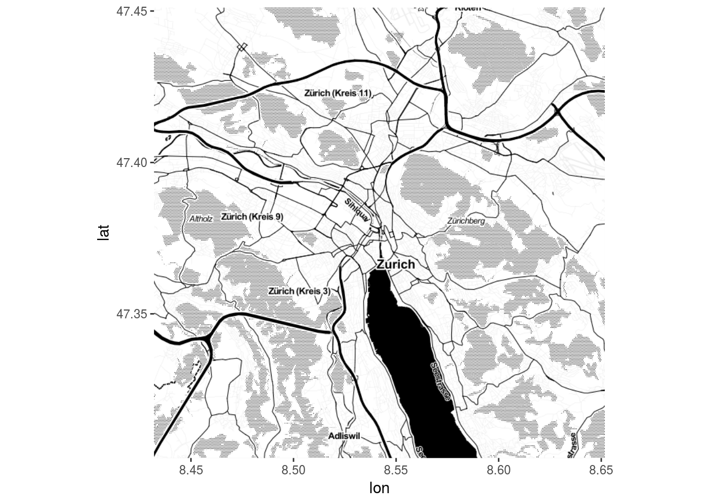

Can you imagine ways to improve public transport in your city? Do you know or wish to learn how to wrangle, analyse, visualize or communicate with data? Join our upcoming hackathon in Zürich, meet people from the open data community - and let’s make an impact together on all the ways we get around!

Toghether with Open Data Zurich and VBZ the Zürich R Meetup Group will hold a hackathon on occasion of the
Open Data Day - Saturday, March 4, 2017.
The event will include time for hacking but we will also invite some speakers for talks. Food and drinks will be provided. All you have to bring is your laptop.
You do not need to be a data science superhero yet. It is completely fine if you have basic skills in one of the following:
For analyses you can use any open data you like. VBZ provides transport delay and passenger count data via the Zurich Open Data Portal. The goal is it to use open source software (such as R) to get interesting new insights and share them with the world.
More details to follow, stay tuned!
Partners: Open Data Zurich, VBZ, Master Program in Biostatistics UZH, Opendata.ch